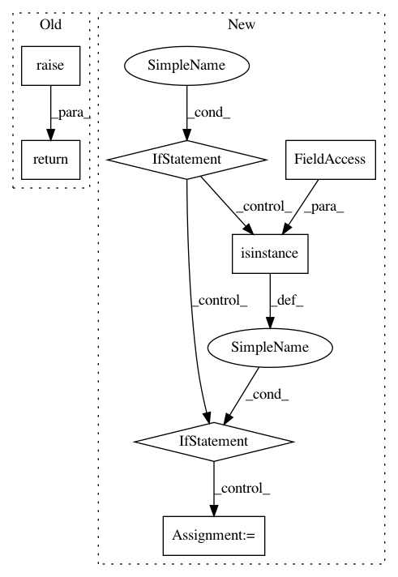

0522a7c3263652eb5c84590b30c1e1eeb987c3a3,tensorflow_datasets/core/features/audio_feature.py,Audio,encode_example,#Audio#Any#,50
Before Change
file_format = self._file_format or audio.split(".")[-1]
audio_segment = lazy_imports_lib.lazy_imports.pydub.AudioSegment.from_file(
audio_f, format=file_format)
return super(Audio, self).encode_example(
np.array(audio_segment.get_array_of_samples()).astype(np.int64))
After Change
np.array(audio_segment.get_array_of_samples()).astype(np.int64))
def encode_example(self, audio_or_path_or_fobj):
if isinstance(audio_or_path_or_fobj, (np.ndarray, list)):
return audio_or_path_or_fobj
elif isinstance(audio_or_path_or_fobj, six.string_types):
filename = audio_or_path_or_fobj
file_format = self._file_format or filename.split(".")[-1]
with tf.io.gfile.GFile(filename, "rb") as audio_f:
return self._encode_file(audio_f, file_format)
else:
return self._encode_file(audio_or_path_or_fobj, self._file_format)
In pattern: SUPERPATTERN
Frequency: 3
Non-data size: 7
Instances
Project Name: tensorflow/datasets
Commit Name: 0522a7c3263652eb5c84590b30c1e1eeb987c3a3
Time: 2020-03-11
Author: ronw@google.com
File Name: tensorflow_datasets/core/features/audio_feature.py
Class Name: Audio
Method Name: encode_example
Project Name: analysiscenter/batchflow
Commit Name: 19a19478d2dc1cdff7321f156512f66dbd6c5dd6
Time: 2017-06-07
Author: rhudor@gmail.com
File Name: dataset/batch.py
Class Name: ImagesBatch
Method Name: load
Project Name: descarteslabs/descarteslabs-python
Commit Name: 2c76358bcdbd01b199c04893370c3b06e867cca9
Time: 2020-03-30
Author: 51922948+sdelany2@users.noreply.github.com
File Name: descarteslabs/workflows/types/array/array_.py
Class Name: Array
Method Name: _promote